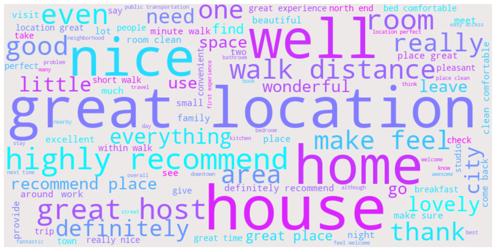

Hospitality Service Guest Review
In recent time, travelers now have a better sources to research and read reviews of other people’s evaluation of various accomodations before making a chioce on the kind of vacation that best suit them, Which mean that property rental owners now have their work cut out for them to provide the best services that provides great satisfaction to their guest. This analysis will explore airbnb guest review on their host. Even through these are subjective opinions of the guest experience, regardless of if they are positive or nagetive, it is important for the host to use such infomation in improving their service which in turn improves guest experience at their property.
Exploration
Gaining insight into the overall experience of guest based on certain aspect of such as the property features, overall/specific satisfaction, communication with the host and the service from start to finish. Exploring each review using frequent words, bigrams and also sentiment scores. The analysis will be conducted using python and various libraries such as pandas for data manipulation, nltk for text cleaning and analysis, plotly and wordcloud for visualisation. Note that reviews are sent after guest checks out of a rental property.
The raw review text will be cleaned and transformed by:
- Converting all text to lower case.
- Removing all automated bots texts.
- Removing all punctuations and empty text.
- Removing all numbers, stopwords and words that do not impact the analysis.
- lemmatize words i.e words like recommended will be transformed to recommend.
Ovarall Guest Reviews
The Top 10 most frequent words of all guest review contains words such as clean, great, nice, comfortable etc which reveals how much positive words are beign used by guest.
The overall sentiment summary shows that majority of the review contains neutral comments which can reinstate that most guests did not express any particular feelings or emotions. Also 45.1% of guest had positive experience of their host and accomodation, while just a little fraction i.e 0.45% gave negative reviews.
WordCloud of Review Words
From the wordcloud, there is high amount of words relating to recommendations, lodgings location, accomodation tidyness, convenience and so on.
Selected Positive & Negative Guest Review Words
Using a selected number of positive and negative words shows that a greater percentage of guest consider their accomodation to be clean, convinient and recommendable rather than dirty, poor or bad.
Guest Review using on Bigrams
Looking at the positive bigrams of guests review, The above plot conveys the number of times each pair of words is used to describe the property location, guest intention to recommend the host service property to other people, the host personality traits and the accommodation overall tidyness.
Review By Host
There are 1,403 unique host in the data, this is a rather huge number so only a few selected host will be explored.
Focusing on hosts with the highest number of frequently used words by guests, (summary). Also the neutral sentiment takes center stage when we talk about the most distinct type of sentiment expressed by guests.
Number of Sentiment score by Host
| Sentiment | Minimum | Average | Median | Maximum | |
|---|---|---|---|---|---|
| 0 | Negative | 1 | 1.569 | 1.0 | 10 |
| 1 | Neutral | 1 | 17.788 | 6.0 | 705 |
| 2 | Positive | 1 | 16.071 | 6.0 | 505 |
The highest number of closely related negative reviews by a host is 10, while for positive reviews is 505. Also the average number of neutral review for all host is 16.1 while 1.57 is the average number of negative review by host.
Top Host by selected Review Bigrams
And finally a simple exploration of host with the highest number of guest reviews on how likely they are to recommend the host service, their experience with the service property and its environs, the host and also the comfort of the accomodation.
Conclusion
Majority of the reviews contains neutral sentiment which show that many guest did not express any specific emotions towards their experience with their host service, while there are more guest that expressed some kind of satisfaction and comfortability than guest that did not. Also majority of the host have very little negative review with an average of approximately 2 reviews beign negative.